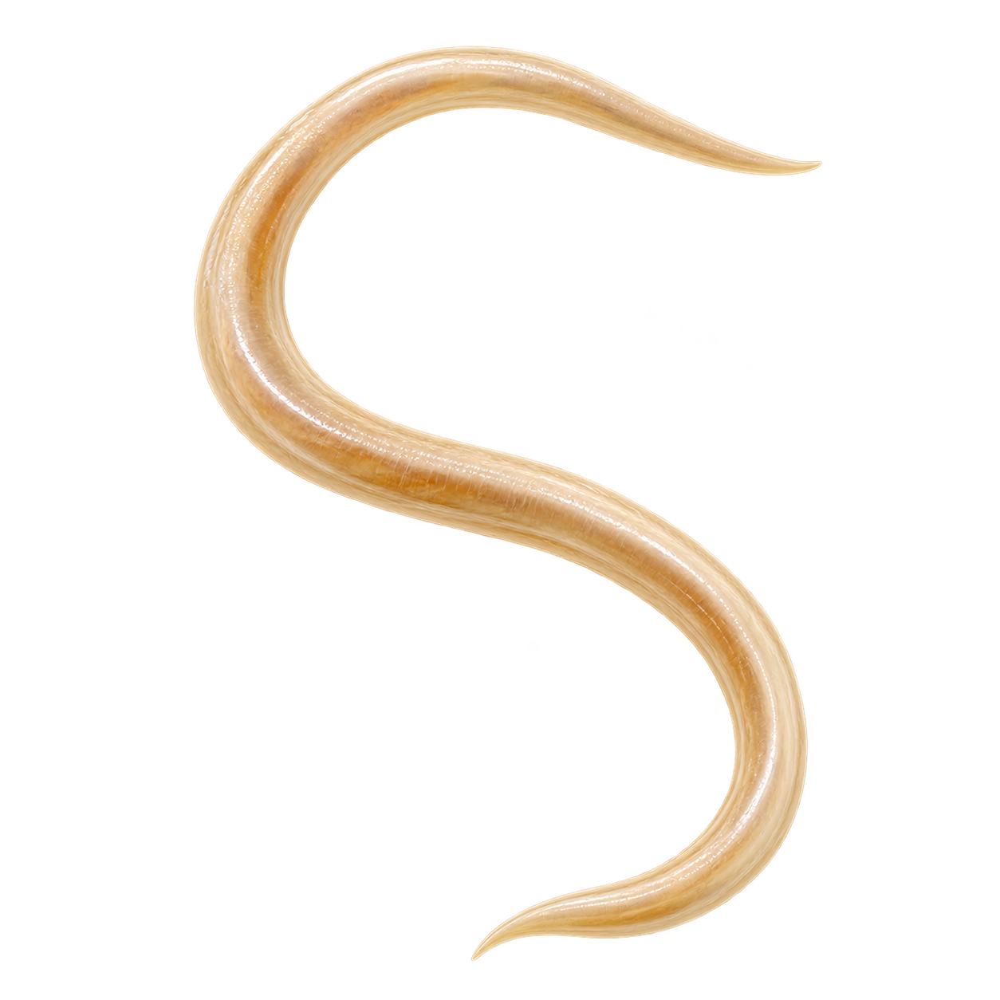

Exploration 07 / 08
Ascaris / Parasitology
A roundworm with a microscopic clue.
Laboratories commonly look for its eggs in stool.
Adult worm illustration · not to scale. Microscopy reference: CDC DPDx

A roundworm with a microscopic clue.
Laboratories commonly look for its eggs in stool.
Adult worm illustration · not to scale. Microscopy reference: CDC DPDx
